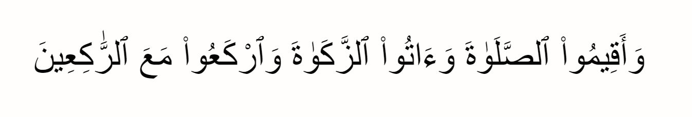
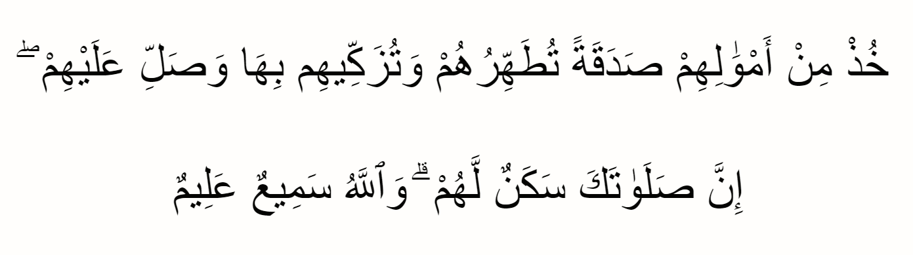

Pengertian Zakat
Zakat berasal dari bahasa Arab yang artinya menyucikan. Zakat adalah bentuk sedekah kepada umat islam. Zakat diperlakukan dalam islam sebagai kewajiban atau seperti pajak. Di dalam rukun Islam, berzakat ada di urutan ketiga, setelah sholat. Meskipun zakat diwajibkan bagi umat islam, tidak semua orang bisa berzakat. Ada beberapa syarat untuk berzakat, misalnya memiliki harta yang cukup atau tidak kekurangan.
Dalam pandangan Islam, memberikan hartanya kepada orang lain yang membutuhkan bisa mensucikan jiwa mereka dan juga sebagai pengingat bahwa harta itu bukanlah milik mereka, namun milik Allah SWT yang dititipkan kepada mereka. Umat Islam percaya bahwa semakin banyak memberi maka Allah SWT akan memberikan nya berkali-kali lipat di akhirat.
Macam-Macam Zakat
Zakat Fitrah
Zakat Fitrah yaitu pengeluaran sebagian harta yang wajib dibayarkan menjelang hari raya Idul Fitri atau pada akhir Ramadhan. Zakat Fitrah berguna untuk menyempurnakan ibadah puasa Zakat Fitrah hukumnya wajib bagi setiap umat Islam, baik laki-laki, perempuan, orang dewasa, anak-anak, merdeka ataupun budak. Besar zakat fitrah yang harus dikeluarkan oleh setiap umat Islam yaitu satu sha' atau kira-kira 2,5 kg beras atau bahan makanan pokok lainnya, seperti gandum dan jagung.
Zakat Mal
Zakat mal adalah zakat harta. Sesuatu dapat disebut dengan harta apabila memenuhi syarat-syarat tertentu seperti dapat dimiliki, disimpan atau dikuasai, dapat diambil manfaatnya sesuai dengan harta tersebut. Contoh dari harta misalnya rumah, mobil, tanah, hewan ternak, emas dan perak. Terkait dengan besaran zakat mal yang harus dibayarkan yaitu 2,5% dari total keseluruhan harta yang disimpan selama satu tahun.
Dalil Zakat dalam Al Qur'an
QS. Al Baqarah/2 : 43
Artinya:
"Dan dirikanlah shalat, tunaikanlah zakat dan ruku'lah beserta orang-orang yang ruku'."
QS. At taubah/9 : 43
Artinya:
"Ambillah zakat dari sebagian harta mereka, dengan zakat itu kamu membersihkan dan mensucikan mereka dan
mendoalah untuk mereka. Sesungguhnya doa kamu itu (menjadi) ketenteraman jiwa bagi mereka. Dan Allah Maha
Mendengar lagi Maha Mengetahui."
8 Golongan yang Berhak Menerima Zakat
Dalam QS. At-Taubah ayat 60, Allah memberikan ketentuan ada delapan golongan orang yang menerima zakat yaitu sebagai berikut:
- Fakir, mereka yang hampir tidak memiliki apa-apa sehingga tidak mampu memenuhi kebutuhan pokok hidup.
- Miskin, mereka yang memiliki harta namun tidak cukup untuk memenuhi kebutuhan dasar kehidupan.
- Amil, mereka yang mengumpulkan dan mendistribusikan zakat.
- Mualaf, mereka yang baru masuk Islam dan membutuhkan bantuan untuk menguatkan dalam tauhid dan syariah.
- Riqab, budak atau hamba sahaya yang ingin memerdekakan dirinya.
- Gharimin, mereka yang berhutang untuk kebutuhan hidup dalam mempertahankan jiwa dan izzahnya.
- Fisabilillah, mereka yang berjuang di jalan Allah dalam bentuk kegiatan dakwah, jihad dan sebagainya.
- Ibnu Sabil, mereka yang kehabisan biaya di perjalanan dalam ketaatan kepada Allah.
Hikmah Zakat
Zakat memiliki banyak hikmah, baik yang berkaitan dengan hubungan manusia dengan Tuhannya, maupun hubungan sosial kemasyarakatan di antara manusia, yaitu antara lain hikmah zakat adalah:
- Menolong kaum dhuafa
- Memberantas penyakit hati
- Menyucikan hati
- Terciptanya sistem kemasyarakatan Islam
- Keseimbangan distribusi harta
- Pembuktian persaudaraan Islam
- Terwujudnya tatanan masyarakat yang harmonis